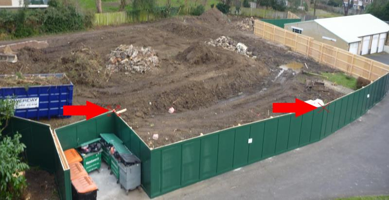
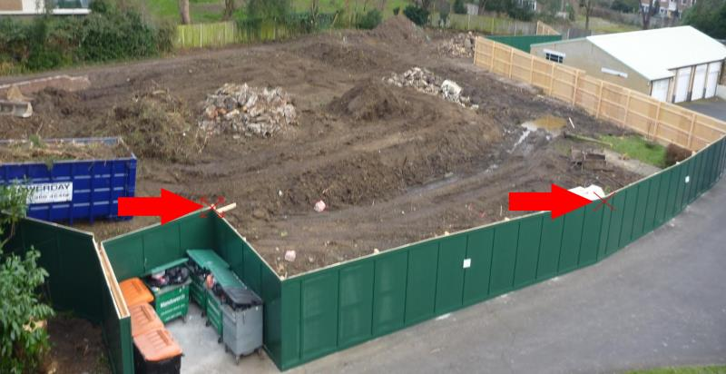

(Pro version only)
Sometimes it is not possible to identify two alignment points that are visible in all the project’s images. Typically, this is when the scene changes considerably. Such an example is the Flats project. The initial photo is of a garden, then there is a sequence of photos of ground clearing and, finally, a sequence of the building’s construction.
These are four images from the Flats project.
As you will see, it is very difficult to identify two alignment points that are locatable in the four images. In such a situation, different approaches might be taken:
The following describes the last option.
Examine the set of images that make up the project and split them into separate projects containing sub-sets of images, with each project containing images where it is possible to identify alignment points. One constraint when forming these sub-sets is that the last image of a sub-set must be the same image as the first image of the following sub-set. This means that it must be possible to identify in the first/last image the alignment points used in both sub-sets.
The Flats project was split into three projects covering (1) original garden; (2) ground clearing; (3) construction of the flats. The alignment points used by the three projects were:
 


These are the first and last images of each of the three projects. Note that the last image is the same as the following project's first image, and that the alignment points presented above are identifiable in the corresponding last and first images.
|
|
|
| Project1 - first image. Alignment points - windows corners | Project1 - last image. Alignment points - windows corners |
|
|

|
| Project2 - first image. Alignment points - points on fence | Project2 - last image. Alignment points - points on fence |
|
|
|
| Project3 - first image. Alignment points - points on 1st floor | Project3 - last image. Alignment points - points on 1st floor |
To render the three projects to a single video, Zoetic must treat each of the three projects as sub-projects. To identify projects as sub-projects, the project names must follow a numerical sequence e.g. flat1, flat2, flat3; and Zoetic's Process sub-projects function must be enabled within Settings. Then, when the first project is loaded (flat1 in this example), Zoetic will process the additional sub-projects as being part of the explicitly loaded project (flat1).
These are the steps to follow:
NB 1. If at step 3, flat2 was loaded instead of flat1, the flat1 project would be skipped and the video would be created using the target from flat2 and images from the numerically higher projects.
NB 2. The Sort function only operates on the explicitly loaded project. To re-order, delete, add (etc) images to a sub-project, the project corresponding to the sub-project must be loaded into Zoetic.
| Back | 레이어가있는 재미 |
|---|